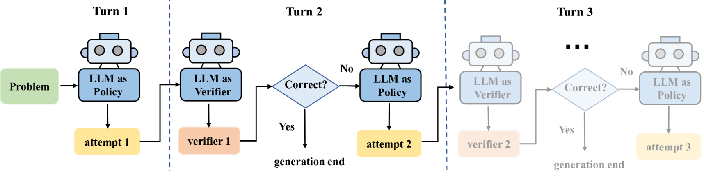
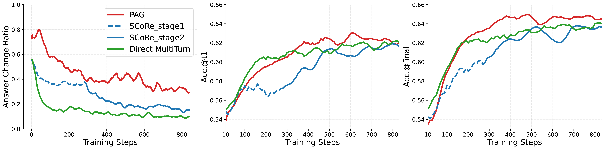
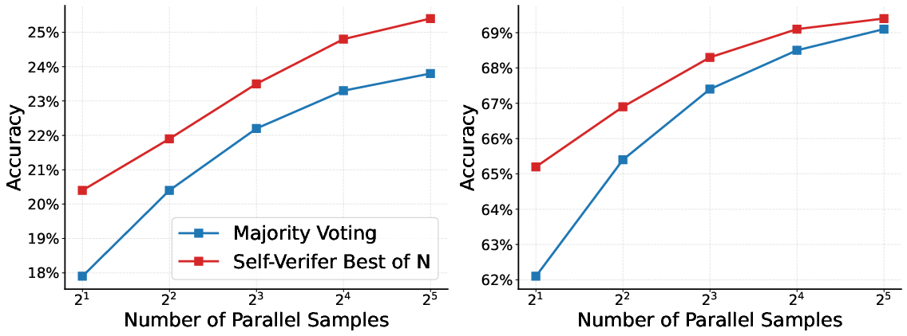

PAG: Multi-Turn Reinforced LLM Self-Correction with Policy as Generative Verifier
Yuhua Jiang1,*, Yuwen Xiong2, Yufeng Yuan2, Chao Xin2, Wenyuan Xu2, Yu Yue2, Qianchuan Zhao1, Lin Yan2
1Tsinghua University 2ByteDance Seed
*Work done at ByteDance Seed
What is Self-Correction?
Self-correction refers to the ability of Large Language Models (LLMs) to improve their own responses during inference without external feedback. The core idea is that LLMs often possess latent knowledge that is difficult to elicit through standard generation, yet self-correction can distill this hidden knowledge into improved outputs. However, existing approaches face significant challenges:
- Supervised Fine-Tuning (SFT) Limitations: Training self-correction via SFT suffers from distribution shift and limited generalization, as models learn to correct on curated data that may not reflect real-world error patterns.
- Model Collapse in Multi-Turn RL: Directly applying multi-turn reinforcement learning leads to "model collapse" - a phenomenon where the model's revised attempts show minimal deviation from initial responses, essentially failing to provide meaningful corrections.
- Complex Training Pipelines: Existing solutions like SCoRe require multi-stage training with warm-up phases to decouple the model's behavior across correction attempts, significantly complicating the training process.
Method: Policy as Generative Verifier (PAG)
We propose Policy as Generative Verifier (PAG), a simple yet effective framework that addresses the fundamental challenges in LLM self-correction. PAG empowers LLMs to self-correct where a single model alternates between policy and generative verifier roles.
The key innovation is a selective revision mechanism: instead of always generating a second attempt regardless of confidence, the model first acts as a generative verifier to check its initial solution, and only revises when an error is detected. This mechanism elegantly solves the model collapse problem without requiring complex multi-stage training or warm-up phases.

Figure 1: PAG framework showing the selective revision mechanism where a single model alternates between policy and generative verifier roles. The model only revises its answer when the verifier identifies an error, preventing model collapse.
The selective revision mechanism operates as follows:
- Initial Generation: The model generates an initial solution as the policy
- Self-Verification: The same model switches to generative verifier role to critically evaluate its own solution
- Selective Revision: Only when the verifier detects an error does the model generate a revised answer
This mechanism prevents superficial revisions by requiring the model to justify why a revision is needed. If the model cannot identify a genuine error, it maintains confidence in its original answer. Multi-turn reinforcement learning (RL) is used to train both the verifier and policy capabilities within this mechanism, enabling the model to be trained directly from instruction-tuned models without any warm-up phases.
Key Advantages Over Existing Methods
-
Solves Model Collapse Elegantly
Unlike SCoRe which requires multi-stage training with warm-up phases to prevent model collapse, PAG's selective revision mechanism naturally prevents superficial corrections. The model only revises when it genuinely identifies an error, eliminating the root cause of collapse.
-
Training Simplicity
PAG can be trained directly from instruction-tuned models without any warm-up phases or multi-stage procedures. This contrasts sharply with SCoRe's complex pipeline that requires careful orchestration of multiple training stages.
-
Unified Policy-Verifier Training
A single LLM seamlessly alternates between policy and verifier roles, jointly improving both reasoning and verification capabilities. This unified approach is more efficient than training separate models or components.
-
Superior Self-Correction Performance
PAG not only improves final self-correction accuracy but also enhances initial generation quality (Acc.@t1), demonstrating fundamental improvements in reasoning capabilities rather than just superficial correction skills.
-
Superior Self-Verification Performance
PAG's generative verifier achieves what few previous works have accomplished: our self-verify Best-of-N (BoN) selection consistently outperforms traditional majority voting (self-consistency). This demonstrates genuine verification ability rather than just aggregation heuristics.
Key Results
Solving Model Collapse Through Selective Revision
The training curves clearly demonstrate how PAG solves the model collapse problem. While baseline multi-turn RL methods quickly plateau as models learn to make superficial revisions, PAG maintains a high answer change ratio throughout training. This is because PAG only revises when the verifier genuinely detects an error, preventing the model from falling into the trap of meaningless corrections. The result is stable convergence and superior final accuracy.

Smarter Self-Verification
At test time, using PAG's verifier to pick the Best-of-N (BoN) candidates consistently outperforms standard majority voting. This highlights PAG's ability to genuinely understand and verify solution correctness.

Performance Highlights
Performance on MATH (Qwen1.5-1.8B & Llama3-8B)
| Method |
Qwen1.5-1.8B-Instruct |
Llama3-8B-Instruct |
| Acc.@t1 |
Acc.@final |
Acc.@t1 |
Acc.@final |
| Base model |
53.2% |
52.4% |
28.7% |
26.6% |
| Single Turn |
61.6% |
62.4% |
32.4% |
32.4% |
| Direct MultiTurn |
62.1% |
64.0% |
33.3% |
35.4% |
| SCoRe |
61.9% |
63.9% |
32.0% |
35.2% |
| Self-Rewarding |
- |
- |
25.0% |
29.4% |
| PAG (Ours) |
62.2% |
65.2% |
35.1% |
36.7% |
Performance on Diverse Benchmarks (Qwen2.5-7B-Instruct)
| Method |
MATH500 |
MinervaMath |
AIME24 |
AIME25 |
Average |
| Qwen2.5-7B-Instruct (Base) |
| Acc.@t1 |
76.0 |
35.9 |
11.1 |
7.6 |
32.7 |
| Acc.@final |
76.1 |
35.6 |
11.8 |
7.8 |
32.8 |
| Single-Turn |
| Acc.@t1 |
79.5 |
36.5 |
13.2 |
9.6 |
34.7 |
| Acc.@final |
80.2 |
37.1 |
14.1 |
10.6 |
35.5 |
| Direct Multi-Turn |
| Acc.@t1 |
80.0 |
35.3 |
15.8 |
11.9 |
35.8 |
| Acc.@final |
81.2 |
35.4 |
17.3 |
13.8 |
36.9 |
| SCoRe |
| Acc.@t1 |
79.5 |
36.7 |
13.1 |
10.0 |
34.8 |
| Acc.@final |
81.5 |
37.7 |
16.6 |
14.0 |
37.4 |
| PAG (Ours) |
| Acc.@t1 |
80.3 |
37.0 |
16.6 |
11.4 |
36.3 |
| Acc.@final |
82.3 |
37.2 |
18.4 |
15.1 |
38.3 |
Citation
If you find our work useful, please consider citing:
@article{jiang2024pag,
title={{PAG}: Multi-Turn Reinforced {LLM} Self-Correction with Policy as Generative Verifier},
author={Jiang, Yuhua and Xiong, Yuwen and Yuan, Yufeng and Xin, Chao and Xu, Wenyuan and Yue, Yu and Zhao, Qianchuan and Yan, Lin},
journal={arXiv preprint arXiv:XXXX.XXXXX},
year={2024}
}